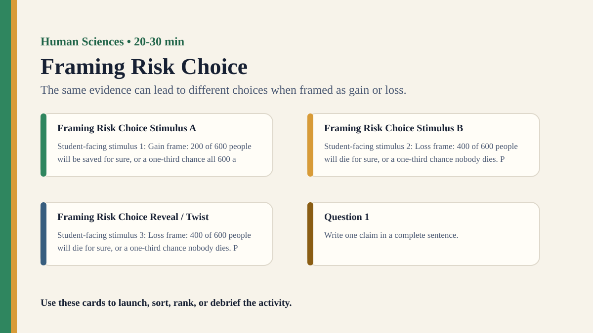

Premium draft resource
Framing Risk Choice Classroom Run Kit
Students make choices under gain and loss frames, then compare how wording changes apparently rational decisions.
One-Minute Teacher Brief
Students make choices under gain and loss frames, then compare how wording changes apparently rational decisions.
Big idea: The same evidence can lead to different choices when framed as gain or loss.
Student Prompt
Inspect Framing Risk Choice Stimulus A. Record one first claim, the evidence you used, your confidence, and what would make you revise.
Concrete Stimulus Packet
Stimulus
Framing Risk Choice Stimulus A
Student-facing stimulus 1: Gain frame: 200 of 600 people will be saved for sure, or a one-third chance all 600 are saved. Predict how people will respond, then identify the wording, context, incentive, or role that could change the result.
Students inspect this exact card first and commit to a claim before hearing anyone else.Stimulus
Framing Risk Choice Stimulus B
Student-facing stimulus 2: Loss frame: 400 of 600 people will die for sure, or a one-third chance nobody dies. Predict how people will respond, then identify the wording, context, incentive, or role that could change the result.
Use this for comparison, a second round, or a partner challenge.Stimulus
Framing Risk Choice Reveal / Twist
Student-facing stimulus 3: Loss frame: 400 of 600 people will die for sure, or a one-third chance nobody dies. Predict how people will respond, then identify the wording, context, incentive, or role that could change the result.
Teacher reveal: connect the changed response to the big idea — The same evidence can lead to different choices when framed as gain or loss.Actual Lesson Questions
| # | Question for students | Teacher key / cue |
|---|---|---|
| 1 | After inspecting Framing Risk Choice Stimulus A, what is your first knowledge claim? | Teacher cue: look for a clear claim, not just a description. |
| 2 | Which exact detail from Framing Risk Choice Stimulus A did you use as evidence? | Teacher cue: students should name visible words, data, source features, method features, or contextual clues. |
| 3 | What did you infer beyond the evidence? | Teacher cue: this is where assumptions, framing, models, or perspective usually appear. |
| 4 | How confident are you: 50%, 60%, 70%, 80%, 90%, or 100%? | Teacher cue: confidence is data for the debrief, not a grade. |
| 5 | What missing information would most improve the knowledge claim? | Teacher cue: push for method, source, context, comparison, or definitions. |
| 6 | Are decisions based on evidence, framing, or both? | Teacher cue: students should move from the classroom example to a general TOK issue. |
Student Task
Use the stimulus cards to complete the observation/inference/evidence/confidence grid, then answer one TOK knowledge question connected to Human Sciences.
Teacher Key / Reveal
The key move is not the “right answer”; it is the moment students see how the same evidence can lead to different choices when framed as gain or loss.
- Strong response: separates observation from inference.
- Strong response: names a method, source, model, language choice, context, or perspective.
- Strong response: revises confidence when new evidence or a new criterion appears.
- Weak response: gives only opinion or says “it depends” without criteria.
Classroom materials
Printable Pack and Cards
Open the classroom resource pack for stimulus cards, CSV card deck, and the activity visual prompt.
Visual Prompt

Setup Checklist
- Prepare mathematically equivalent gain-frame and loss-frame versions.
- Collect anonymous choices so students examine patterns, not individual judgement.
Ready-to-Use Examples
- Gain frame: 200 of 600 people will be saved for sure, or a one-third chance all 600 are saved.
- Loss frame: 400 of 600 people will die for sure, or a one-third chance nobody dies.
Run Resources
- Two scenario sheets with equivalent outcomes and different wording.
- Class tally table comparing safe/risky choices under each frame.
Teacher Language
- The numbers did not change; the frame did.
- If wording changes choices, what does that reveal about evidence and emotion?
Sample Student Output
- I chose the safe option when it was framed as saving people but risked more when it was framed as deaths.
- The same data felt different because the loss frame made inaction feel worse.
Procedure
- Randomly give half the class a gain-framed version and half a loss-framed version.
- Students choose between a certain option and a risky option.
- Collect anonymous choices and compare class patterns by frame.
- Reveal that the underlying outcomes were equivalent.
- Debrief how framing can shape judgement without changing facts.
Debrief Questions
- Knowledge question: Are choices based on evidence, framing, or both?
- Can a rational decision be separated from how options are described?
- How do human scientists study hidden influences on judgement?
Adaptations
- Support: use smaller numbers and draw the outcomes.
- Challenge: include a third neutral-frame condition.
Extension Tasks
- Students identify gain/loss framing in public health, climate, or school policy messages.
- Design a more transparent risk communication statement.